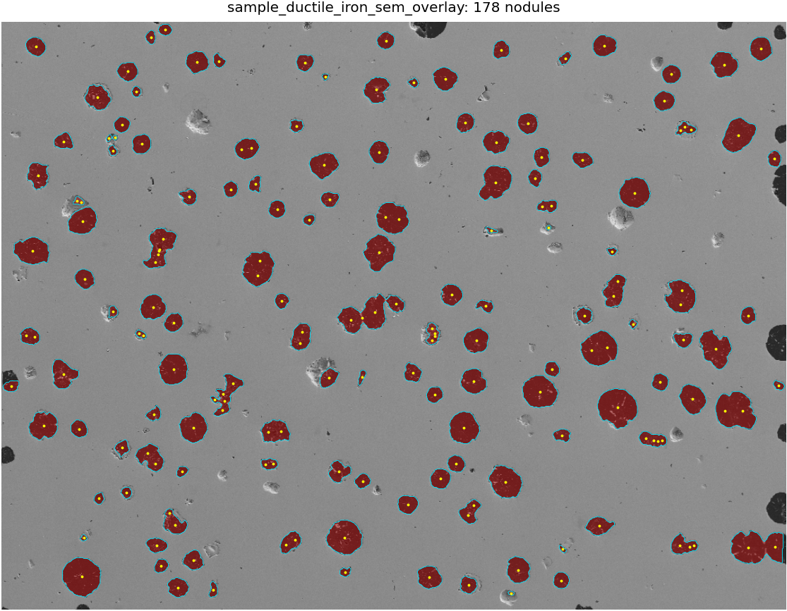

Graphite nodule statistics directly from microscopy images
Run the released CNN-based computer-vision workflow in your browser or use the Python script for batch analysis. Uploaded images stay on your computer; the browser demo performs local ONNX inference.
Purpose for reviewers
This page provides a reviewer-accessible supplementary workflow for graphite nodule segmentation and quantitative statistics used in the associated ADI manuscript. The browser demo performs local ONNX inference and is intended for single-image inspection, overlay verification, and CSV export. For manuscript-level statistics, use the Python batch workflow with fixed pixel size, probability threshold, watershed splitting, and object-size filters.

Reviewer validation
The public repository includes one SEM example for direct inspection, plus cautious validation metrics for the released Python CNN-based computer-vision workflow.
Public example: AI vs traditional/ImageJ-style workflow
| Metric | Traditional/ImageJ-style | Python CNN workflow | Relative error |
|---|---|---|---|
| Nodule count | 180 | 178 | 1.1% |
| Count density | 169.28 mm⁻² | 167.40 mm⁻² | 1.1% |
| Mean diameter | 25.81 μm | 25.75 μm | 0.2% |
| Mean spheroidicity | 0.791 | 0.851 | 7.5% |
Comparator: inverted-grayscale Otsu thresholding and watershed, using the same 1.16279 μm/pixel scale and 25-20000 px object filters. Relative error is calculated against the traditional/ImageJ-style result. The CNN-workflow values are from the Python batch workflow used for formal statistics.
The slightly larger difference in mean spheroidicity mainly reflects boundary-smoothing and watershed-splitting differences between threshold-based segmentation and probability-map-based CNN segmentation; count density and equivalent diameter remain highly consistent.
Model performance summary
| Metric | Value | Scope |
|---|---|---|
| Dice coefficient | 0.963 | Held-out curated masks |
| IoU | 0.929 | Held-out curated masks |
| Precision / recall | 0.933 / 0.995 | Held-out curated masks |
| Nodule-count MAE | 2.33 nodules | Two-seed repeatability |
| Area-fraction difference | 0.20 percentage points | Public traditional/ImageJ-style check |
| Count-density MAE | 2.19 mm⁻² | Two-seed repeatability |
The reported validation metrics quantify agreement with curated reference masks rather than a fully independent expert-labeled benchmark.
Browser tool
A public SEM example is loaded automatically. Reviewers can run the analysis immediately, or upload one representative low-magnification microscopy field and then inspect the overlay before using the metrics.
Input and settings
The public example is loaded by default. Start here for the reviewer quick test.
The public example image is loaded automatically. Uploading a file replaces it. Supported single-image inputs: PNG, JPG/JPEG, BMP, WebP, TIF, and TIFF. Multi-page TIFF files use the first page.
Manual values should come from the original microscopy image. If the browser downsizes the image, the app converts this value before measuring objects.
Scale-bar calibration
Click Select scale bar, then click the two ends of the scale bar on the image.
Equivalent diameter
μmSpheroidicity
2D circularity, 0 to 1Batch analysis
Use the Python script for multiple images, probability maps, masks, overlays, JSON summaries, and object-level CSV output.
git clone https://github.com/ustbTobyMa/adi-graphite-nodule-ai.git
cd adi-graphite-nodule-ai
python3 -m venv .venv
source .venv/bin/activate
pip install -r requirements.txt
python scripts/graphite_nodule_analyzer.py \
--image-dir /path/to/sem_images \
--checkpoint models/graphite_unet_seed7.pt \
--output-dir /path/to/output \
--pixel-size-um 1.16279 \
--threshold 0.50 \
--min-area-px 25 \
--max-area-px 20000Released files
Models
ONNX model for the browser and PyTorch checkpoint for Python batch analysis.
Example
One SEM example, one overlay, and one mask are provided for testing only.
{kind=link}
{kind=link}
{kind=link}